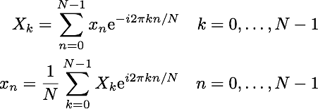

Discrete Fourier Transform
Dicrete Fourier Transform(DFT) and
Inverse Dicrete Fourier Transform(IDFT) can be described respectively as:

The result of DFT are complex-valued Fourier coefficients using which the original vector or function can be restored in the process of IDFT. If some Fourier coefficients are zeroed the restored vector or function would differ from the original as you can see by clicking the links below:
Complex DFT and IDFT
Real DFT and IDFT
Complex DFT and IDFT
Real DFT and IDFT
Complex DFT and IDFT
Move slider to zero more coefficients
Random complex vector
Inverse transform of the vector
Real DFT and IDFT
Move slider to zero more coefficients
Real-valued step function
Inverse transform of the function